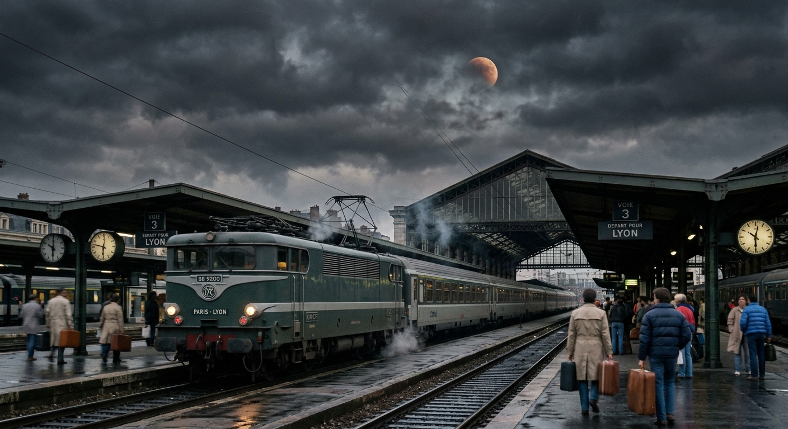

A train leaves Paris for Lyon, Saturday September 12th 1985, day of a lunar eclipse. It will ride at 216 km/h, the wind blows S/SE at a factor 5, and the temperature outside the train is 13 degree Celsius, and 22°C inside. The sky is cloudy. Another train leaves Lyon for Paris, on the same day at 23:00. It is riding at 224km/h. Which one of these two train will be the furthest away from Paris when they will cross path?